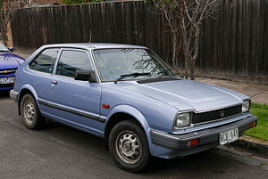
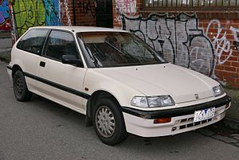

Veja Nossos Carros

Honda Civic
Primeira geração
O Civic de primeira geração foi lançado em 11 de julho de 1972, mas vendido como modelo 1973 no Japão. Em Portugal foram apenas produzidas 100 unidades das suas edições mais raras (Orange Edition e Black Edition). Ele era equipado com um motor 1.2 refrigerado a água, tinha freios a disco na dianteira, bancos de vinil reclináveis, painel que simulava madeira e rádio AM/FM e ar condicionado opcionais. Existiam três opções de carroceria, "Hatchback" de duas e quatro portas e "Wagon" de quatro portas. Em 1975 foi estreado o motor CVCC que tinha design de cabeçote que permitia a realização de uma combustão mais eficiente em relação a maioria dos motores da época. Em 1976, foi lançado um carro que usava como base a carroçaria "Hatchbak" duas portas do Civic chamado Accord.

Segunda geração
O Civic de segunda geração foi lançado em junho de 1979 sendo vendido como modelo 1980. Ele era mais largo e tinha uma forma mais angular, o motor 1.2 caiu em desuso e todos os Civic passaram a utilizar os motores CVCC, o 1.5 continuou sendo usado e foi introduzido um novo motor 1.3, a tecnologia CVCC adicionava uma válvula por cilindro permitindo que houvesse uma melhor eficiência na combustão. As carrocerias oferecidas eram "Hatchback" (três e quatro portas), "Sedan" (quatro portas) e "Wagon" (cinco portas).
Terceira geração
O Civic de terceira geração foi lançado em setembro de 1983 e foi vendido como modelo 1984. Os modelos ''Hatchback'' de quatro portas e ''wagon'' foram fundidos e resultaram em uma "wagovan'' uma espécie de SUV com tamanho reduzido. Um cupê duas portas chamado "CRX" foi introduzido, tinha tamanho reduzido, dimensões compactas e, consequentemente, era leve. Na terceira geração do Civic foram introduzidos os motores de série "D" que foram usados pela Honda até o final dos anos 90. Em 1984 foi lançado um modelo esportivo no mercado japonês chamado "SI", tinha suspensão melhorada e motor 1.6 DOHC com 130 cv. Nos EUA os modelos "SI" oferecidos eram o Civic "Hatchback" Com 91 cv e o CRX com o mesmo motor e estilo de carroceria. Em 1984 na versão "wagovan" foi introduzido um opcional de tração 4WD, este modelo recebia uma transmissão modificada para suportar este sistema de tração, o sistema era ativado através de um botão no painel, até 1987, neste ano, recebeu uma atualização que permitia que a tração 4WD fosse ativada quando as rodas dianteiras perdessem tração.
_GL_hatchback_(2010-10-02).jpg)
Quarta geração
Em setembro de 1987 foi estreada a quarta geração do Honda Civic, vendido como modelo 1988, A carroceria desta geração possui dimensões maiores e capo mais baixo em relação à da terceira geração. Foi oferecida uma grande quantidade de versões que foram vendidas em todo o mundo. A versão mais notável foi sem dúvidas a SiR equipada com o motor B16A DOHC VTEC que possuía 150 hp. Todos os modelos vendidos nos EUA tinham injeção eletrônica mas, em outros mercados ao redor do mundo versões carburadas estavam disponíveis. Na quarta geração do Civic todos os modelos passaram a ter suspensão independente nas quatro rodas. O CRX ainda fez parte da família Civic durante esta geração, tendo como opções os modelos HF, DX e SI nos EUA.
Quinta geração
Lançado no Brasil em 1992, o Civic era importado nas configurações hatchback (DX, LSi, Si, e VTi), sedan (LX e EX), coupé (EX e EXS - a partir de 1994) e targa (CRX, Si e VTi). Havia opção de escolha entre o câmbio manual e o automático, embora este último fosse mais frequente, sendo a versão VTi tendo apenas câmbio manual. Os motores oferecidos no Brasil eram: 1.5L-D15B2 (LSi); 1.5L-D15B7 (DX e LX); 1.6L-D16Z6 (Si, EX e EXS); B16A2 (VTi) e B16A3 (VTi 1995). Os motores D16Z6 e B16A2 e A3 eram oferecidos com a tecnologia VTEC. A velocidade máxima do modelo VTI conforme a variante do modelo do eg9 ou eg6, é por volta dos 235 km/h. A maioria dos modelos vendidos no Brasil foram importados dos Estados Unidos e já saiam da concessionária com bom nível de equipamentos (ar condicionado, direção hidráulica, conjunto elétrico, teto solar, air-bag duplo e freios ABS - versões EX, EXS e VTi). Os modelos Civic dos anos de 1992 e 1993 eram montados no Japão para o mercado americano, e os modelos Civic 1994 e 1995 já eram montados no Estados Unidos. Algumas unidades desembarcaram no Brasil via importação independente, os modelos encontram-se nas configurações VX, CX e Si. Visualmente, o sedan tinha a dianteira diferente do Hatch/Coupé: mudavam-se para-choque, capô, para-lamas e indicadores de direção (piscas). As versões sedan, targa e hatch podem ser encontradas na série de jogos Gran Turismo, para os consoles Playstation e Playstation 2. Esta geração é muito popular nos EUA, aparecendo em grandes quantidades e variedades nos eventos de carros Tuning, além do filme Velozes e Furiosos. Esta geração foi responsável pela construção da imagem de durabilidade e resistência que a Honda possui no país. Vários exemplares desta geração ainda seguem rodando nos dias atuais.

Sexta geração
Foi concebida no final de 1995, já como modelo 1996, com missão de suceder a geração anterior, que havia tido sucesso em vendas. As versões existentes no mercado brasileiro eram LX-B, LX, EX e VTi. Há também unidades da versão CX importadas de maneira independente. O Hatch da versão VTi, como na geração anterior, era caracterizado como um esportivo "pocket rocket" (foguete de bolso), devido ao motor B16A2 de 160 cv, comando de válvulas DOHC-VTEC (variável na admissão e no escape) e modificações (molas e amortecedores diferenciados, rodas aro 15, aerofólio traseiro, saias laterais). Oferecido com o motor B16A2 (também presente no Civic VTi de quinta geração, que vinha com o motor B16A2 ou B16A3), tendo desempenho superior a concorrentes competitivos (Alfa Romeo 145 Quadrifoglio, Audi A3 1.8 Turbo, Citroën Xsara VTS 2.0 16V etc) e impressionante até os dias atuais. A partir de 1997, o Civic passa a ser fabricado no Brasil somente na versão sedan. Vinham equipados com dois motores: D16Y7 (LX) e D16Y8 (EX), sendo o primeiro de 106 cv sem comando variável e o segundo, com SOHC-VTEC (comando de válvulas variável na admissão), de 127 cv. As diferenças, basicamente, estavam no cabeçote, coletor de admissão, TBI e no sistema de escapamento. No acabamento, a diferença entre as versões eram poucas: o EX contava com ABS, rodas Enkei aro 14, rádio com disqueteira no painel, porém separada do aparelho; a versão básica LX-B, só esteve disponível de 1997 a 1998: não havia ar-condicionado. Havia uma outra versão, EX Coupé, comercializada entre 1996 e 1997, quando a Honda resolveu importar de forma oficial algumas unidades. O motor adotado era o mesmo dos Sedan EX, D16Y8 de 127 cv. Havia opção de câmbio automático e manual, sendo a primeira a mais comum. Em 1997 o modelo Targa (CR-X ou Del Sol - conforme motorização) era encerrado a produção. Em 1998 o VTi deixava de ser importado, sob alegação de baixa procura e alto preço (R$ 50 mil). Em 1999 uma leve reestilização no capô, faróis e tampa do porta-mala, com a troca das lanternas por outras com lente translúcida (lisa) e de maior porte. Em 2000, mais precisamente no fim do ano, a 6ª geração era encerrada.
Setima geração
A sétima geração foi lançada em 2001, vendida como sedan 4 portas e motor 1.7 16V, nas versões LX e EX, posteriormente, a intermediária LXL era lançada em 2003, todas com opção de câmbio automático de 4 marchas, sendo apenas a EX com Freios ABS. Houve pequenos aperfeiçoamentos, como nas gerações anteriores, a antena do rádio que ficava acima da porta do motorista, passou a ser interna. A suspensão foi suavizada com adoção de amortecedores e molas de nova calibragem e adição de barra estabilizadora na traseira e novas lanternas traseiras. Para a versão EX, foi concebido um novo painel. Em 2004, ocorreu um facelift com novo design frontal (capô, grade, faróis, para-lamas e para-choques dianteiro e traseiro). Em outros países também esteve disponível a versão EX que era equipada com uma transmissão continuamente variável (Câmbio CVT).[4]
Oitava geração
Em 2006, foi lançado o Novo Civic, com o motor SOHC (R18A1), bastante diferente das gerações antigas. Foi vendido em 3 versões: LX (exclusiva para deficientes, com motor 1.6 e 125 cv), LXS (1.8 140 cv) e a topo de linha EXS (1.8 140 cv), que disponibilizava um recurso de trocas de marcha através de aletas atrás do volante, recurso este chamado de "Paddle-Shift". Em outubro de 2006, marcou a chegada do Civic Si. Equipado com motor K20Z3, um DOHC, 2.0 aspirado, com sistema I-VTEC, de 192 cv. Com proposta esportiva, era fabricado com câmbio manual de 6 marchas, interior personalizado e LSD (diferencial auto-blocante). A diferença da versão era dada apenas pelas letras "i-VTEC DOHC" na lateral, rodas aro 17 e aerofólio no porta-malas. Foi eleito pela Revista Autoesporte o Carro do Ano de 2007.
SI geração
O Honda Civic Si é um carro esportivo compacto, a versão esportiva do Honda Civic. A designação "Si", que corresponde a "Sport Injection", foi originalmente usada no Japão e América do Norte, significava o mais potente do mercado civil. Para o mercado japonês e europeu, foi adaptado como um carro de alto desempenho. No Canadá, o modelo é conhecido por ter muitas semelhanças com o modelo antigo. Esse carro esportivo tem a configuração de coupé ou sedan nos países fora da Europa. Ele tem 192 cv na versão feita no Brasil. Tem como concorrentes no Brasil: Stilo Abarth, Golf GTI, Linea T-Jet e outros. Foi escolhido pela revista Quatro Rodas o melhor esportivo de fabricação no Brasil. Também já foi considerado o carro nacional mais rápido, perdendo o posto para o Volkswagen Jetta TSI, quando saiu de linha em 2011. O Civic Si 2007, 08, 09, 10, 11 faz de 0-100 em 7,5 segundos e chega aos 215 km/h. Velocidade esta que é limitada eletronicamente. Já o Civic Si 2014, que tem um motor de 2.4 litros, 201 cv de potência e 23,4 kgfm de torque, faz de 0-100 em 6 segundos e chega aos mesmos 215 km/h, que também é limitado.
Nona geração
Em dezembro de 2010 a Honda apresentou um "esboço" da nona geração do Civic, segunda ela o novo carro era "energético e aerodinâmico". Ambos os conceitos Sedan e Cupê foram apresentados em 10 de janeiro de 2011 no Salão Internacional do Automóvel Norte-Americano. Ele começou a ser vendido nos EUA em 20 de abril de 2011. No final de 2012 a Honda apresentou o "Facelift" desta versão com novas opções de modelos e mudanças no exterior e interior. Todas as versões vêm de série com as assistências ABS (Sistema Anti-Bloqueio do Freio), VSA (Assistência na estabilidade do veículo) e EBD (Distribuição de Frenagem Eletrônica). Traseira versão sedan. O Civic desta geração, no seu lançamento, foi muito criticado pela imprensa automotiva pois não possuía um interior agradável e seu "rodar" não era "suave", rapidamente, a Honda realizou leves mudanças no interior e exterior do carro e um ano após o lançamento passou a vender o modelo atualizado mas, porém, este erro não permitiu que esta geração fosse tão sucedida em questão de vendas e "aceitação do público" quanto foi o civic de oitava geração.
_–_Frontansicht,_20._Juni_2012,_Wuppertal.jpg)
Décima geração
O Civic de décima geração era baseado em uma nova plataforma compacta global da Honda. O modelo foi revelado em setembro de 2015 para ser vendido em 2016. Tem como característica um novo exterior estilo "Fastback", com o pilar-C fluindo para dentro da traseira. A frente tem um design no qual uma asa cromada flui sobre os faróis. O interior recebeu muitas mudanças em relação à geração anterior, passou a receber um painel de instrumentos digital e uma tela LCD de 7 polegadas que está posicionada à visão do motorista na versão EX e superiores. A instrumentação da versão LX consiste em um tacômetro analógico grande que rodeia um velocímetro e outros mostradores digitais. Interior na versão com volante na direita. Este novo Civic tem duas edições diferentes (black edition e orange edition) sendo fabricadas para Portugal 100 unidades cada.
Décima primeira geração
O Civic de décima primeira geração foi anunciado em 2020 e começou a vir importado para o Brasil, já em Itirapina[6], pois os custos de produção desta geração foram altos demais sgundo a Honda[7], com a décima geração deixando de ser produzido no Brasil em novembro de 2021[8]. Em 2023, a Honda lançou a versão híbrida do Civic, na versão RS com o motor E-HEV. [9]